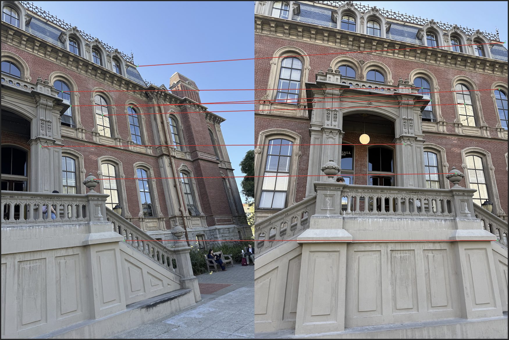

Images can be related by many transformations. In this part we care about the
perspective/projective case—the camera model that explains how a planar scene looks from
slightly different viewpoints. You can think of translation/rotation/affine as simpler limits, while
projective transforms cover the full perspective effects we see in photos.
Intuitively, a projective warp remaps the image as if the camera were tilted or the plane were viewed from a
new angle. A few useful facts:
Straight lines remain straight, but parallel lines may meet at a vanishing point.
Distances and their ratios are generally not preserved.
There is no requirement that the origin maps to the origin.
Composing two projective warps yields another projective warp.
Algebraically, it is a change of coordinates in projective space using a 3×3 homography.
Below are two example pairs shot on campus. For each pair, the center of projection is held fixed while the
camera rotates, producing the desired projective relationship that we will use later for rectification and
mosaicing.
Scene 1 — Figure 1Scene 1 — Figure 2
Scene 2 — Figure 2Scene 2 — Figure 2
A.2: Recover Homographies
Original Image 1Original Image 2

Eight hand-picked correspondences visualized on the image pair.
We estimate a projective warp (homography) \(H\) such that each correspondence
\((x_i, y_i) \leftrightarrow (u_i, v_i)\) satisfies
\[
\begin{bmatrix}\lambda u_i\\ \lambda v_i\\ \lambda\end{bmatrix}
=
\begin{bmatrix}
h_1 & h_2 & h_3\\
h_4 & h_5 & h_6\\
h_7 & h_8 & 1
\end{bmatrix}
\begin{bmatrix}x_i\\ y_i\\ 1\end{bmatrix}.
\]
Eliminating \(\lambda\) yields two linear equations per match. Stacking all
\(n\) matches (here \(n=8\)) gives an over-determined linear system
\(A\mathbf{h}=\mathbf{b}\) for the unknown vector
\(\mathbf{h}=[h_1,h_2,h_3,h_4,h_5,h_6,h_7,h_8]^T\):
\[
\underbrace{
\begin{bmatrix}
x_1 & y_1 & 1 & 0 & 0 & 0 & -u_1x_1 & -u_1y_1\\
0 & 0 & 0 & x_1 & y_1 & 1 & -v_1x_1 & -v_1y_1\\
\vdots & \vdots & \vdots & \vdots & \vdots & \vdots & \vdots & \vdots \\
x_n & y_n & 1 & 0 & 0 & 0 & -u_nx_n & -u_ny_n\\
0 & 0 & 0 & x_n & y_n & 1 & -v_nx_n & -v_ny_n
\end{bmatrix}
}_{A \in \mathbb{R}^{2n\times 8}}
\;
\underbrace{
\begin{bmatrix}
h_1\\h_2\\h_3\\h_4\\h_5\\h_6\\h_7\\h_8
\end{bmatrix}
}_{\mathbf{h}}
=
\underbrace{
\begin{bmatrix}
u_1\\ v_1\\ \vdots\\ u_n\\ v_n
\end{bmatrix}
}_{\mathbf{b}}.
\]
We solve for \(\hat{\mathbf{h}}\) in the least-squares sense and assemble
\[
H=
\begin{bmatrix}
h_1 & h_2 & h_3\\
h_4 & h_5 & h_6\\
h_7 & h_8 & 1
\end{bmatrix},
\]
followed by a scale normalization so that \(H_{33}=1\).
We collected eight correspondences using the
online point-clicking tool.
The selected coordinates are shown below (rows correspond to matches):
\[
\text{Image 1 (source) } \{(x_i,y_i)\}_{i=1}^{8} =
\begin{bmatrix}
666 & 2455\\
1178 & 1768\\
2307 & 1098\\
1036 & 1526\\
1716 & 1926\\
2083 & 4048\\
1539 & 3011\\
2205 & 1785
\end{bmatrix},\qquad
\text{Image 2 (target) } \{(u_i,v_i)\}_{i=1}^{8} =
\begin{bmatrix}
2531 & 2415\\
2984 & 1674\\
4233 & 696\\
2837 & 1465\\
3559 & 1736\\
4105 & 4044\\
3407 & 2910\\
4141 & 1486
\end{bmatrix}.
\]
Substituting these into the system above and solving in least squares produces the homography below.